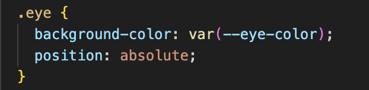
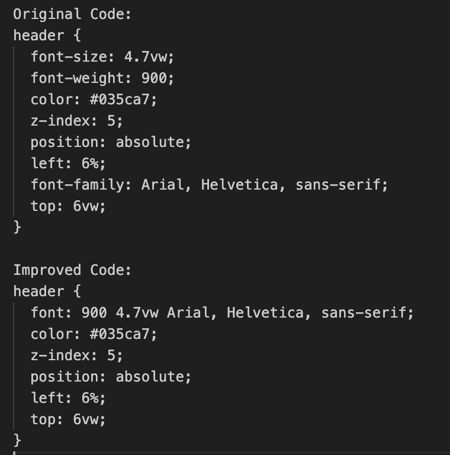

Assignment 2: CSS & SMIL Animation
Link to Original Assigment 2This assignment focused on refining the BEM naming conventions and simplifying the CSS code for better maintainability and responsiveness. The main issues with Assignment 2 included responsiveness, web interactions, more suitable animations, a focus on BEM, and minimizing code as much as possible. These were the key points I addressed in this updated version.
Main Contributions:
My main contributions to Assignment 2 were building up the entire poster layout and making it responsive.
Main Changes
The changes involved consolidating similar styles to reduce redundancy and improve maintainability. The use of more flexible units like vw ensures better responsiveness. The BEM naming convention was refined to be more consistent and descriptive. For example in the original code there was: '.footer__blue-text', 'footer__blue-link', '.footer__blie-contact' wihch i updated to: '.footer__text', 'footer__link', 'footer__contact'.
CSS Drawing Optimization:I used CSS variables to define reusable properties and reduced repetition by creating shared classes for common properties. Specific classes were extended for unique styles, adhering to BEM naming conventions to ensure clarity and maintainability. 
This approach not only minimizes the CSS code but also improves readability and ease of updates. Using CSS variables makes it easier to manage color schemes and other common properties across the entire project.
Font Shorthand Property:
The use of the font shorthand property simplifies the code and makes it more readable. This change also helps in maintaining consistency and reducing potential errors in font declarations.
Added Interaction:
Adding hover effects and animations enhances user engagement. The bounce effect on the logo provides a visual cue that makes the interface more dynamic and interactive. Another exmaple of where i implemented web interaction is on the header. When user hovers with their mouse over header it turns into green color, this makes the uer to take extra attention to what the poster's concept.
SVG Styling:
I created an svg_style.css to hold the styles related to SVG drawings, clouds, and eyes. This separation makes the codebase more manageable in my opinion. Organizing SVG styles in a separate file reduces clutter in the main CSS file and makes it easier to locate and update SVG-specific styles.
Accessibility and Sustainability:
I ensured that the animations moved slowly to accommodate users with motion sensitivities and made the text responsive to different device screens. I optimized the SVGs by importing them as images and using Adobe's object simplifier to reduce file sizes, thereby minimizing the code length and improving performance.
Credits:
I would Like to credit my group memeber for his contribution to the second assigment:
- Håkon Andreas Sæbjørnsen
You can view live version of my assigment here: Link to Updated Version. The source code for this project is available on Github: repository.